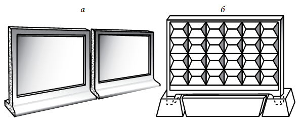

Бетонні паркани поширені досить широко. Найбільш простим варіантом такої огорожі є самостоячі огорожі. Їх
встановлюють на спеціальні опори, які є невід'ємною частиною самих плит. При цьому немає необхідності
виконувати підготовчі земельні роботи, огорожу можна зібрати за кілька годин — важкі панелі просто
вивантажують краном, вибудовуючи їх в лінію.
Більше ніяких монтажних робіт не потрібно — вага однієї
плити може досягати 1600 кг, так що без спецтехніки зламати її або вкрасти не вийде.

Бетонні огорожі: а — самостоячі; б — на «склянках»
Подібним чином влаштована і огорожа на «склянках». Конструкція цього типу модульних бетонних огорож включає в
себе спеціальні пустотілі тумби — ті самі «стакани». Тумби встановлюють на рівну поверхню, після чого в їх
отвори вставляють бетонну панель з ніжками.
У такі ж «стакани» можна вставляти і стовпи, між якими
кріплять панелі. Але частіше бетонні плити кріплять до стовпів, заглибленими у грунт не менш ніж на 0,5 м.
Така конструкція є більш надійною, ніж попередні. З використанням стовпів зводять так звані європаркани та
огорожі з всіляких ажурних бетонних плит.